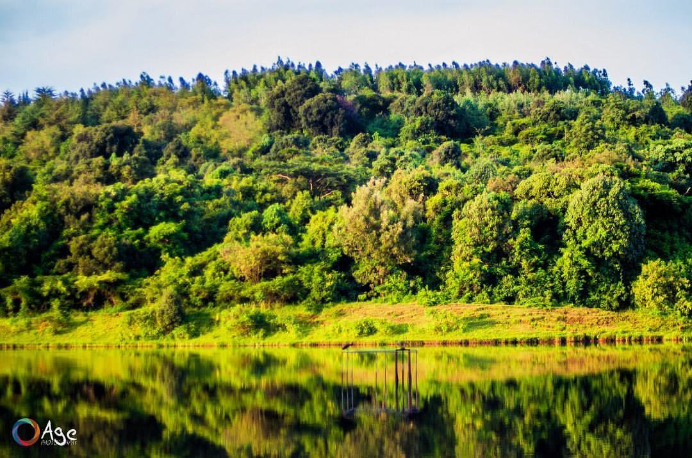
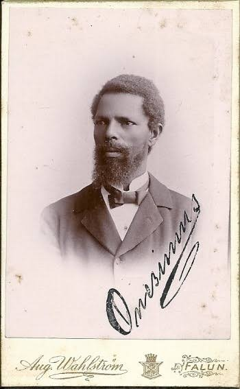

Nekemte town in Western Oromia is endowed with abundant natural and manmade attractions
which can draw attention of both domestic and international tourists.
It is a city with suitable climate.It is at the center of the road network for south-western Ethiopia.
It is one of the old towns in the country, established in 1872 which is situated on a flat, hilly landscape.
Nekemte is one of the reform towns in the region and has a city administration, municipality and six kebelles. The town has structural Plan prepared in 2009.
Nekemte is a city endowed with a natural resources. For instance Sorga lake is among the beautiful natural resource found in the city.

It is a burial place of Onesimos Nesib, a famous Oromo who translated the Bible to Oromo Language for the first time, in collaboration with Aster Ganno.
